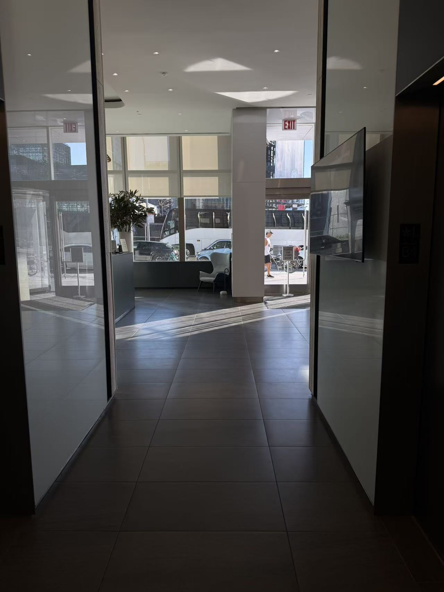

02. Leaving My Apartment Building
I walked through the lobby toward the exit. Sunlight stretches across the tiled floor. Through the glass doors, I can see a bus, cars, and a person walking past.

The street is visible before I step outside.